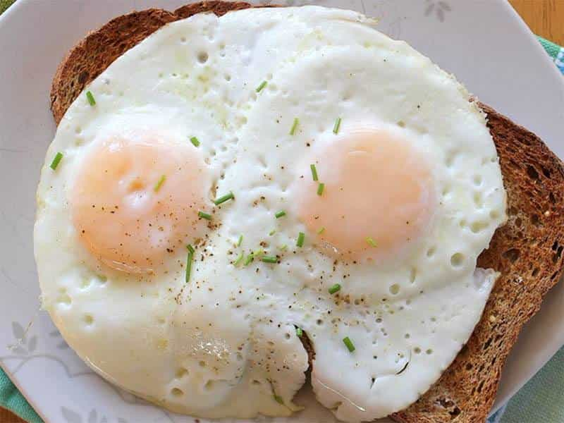
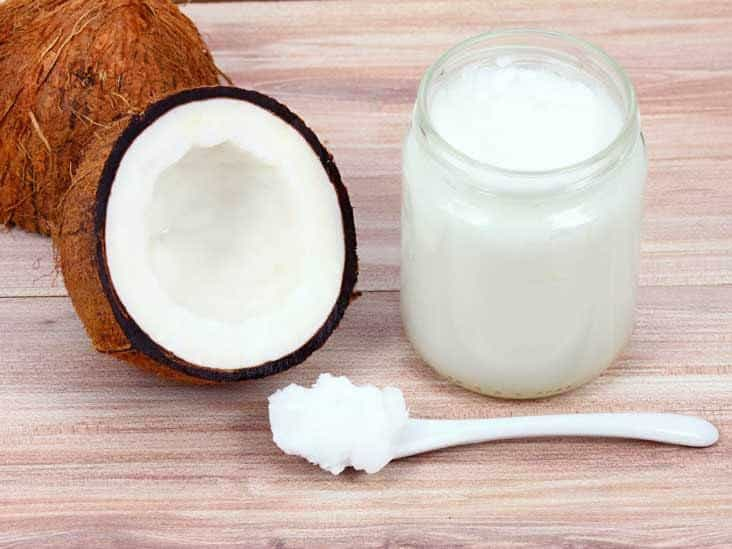
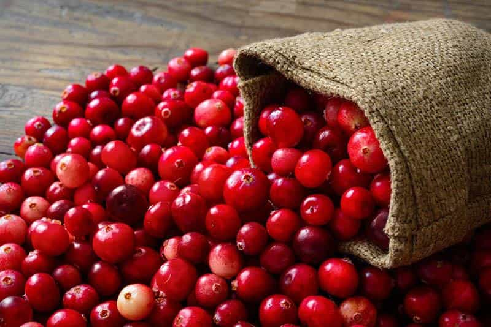

Daryush "Roosh" Valizadeh created ROK in October 2012. You can visit his blog at RooshV.com or follow him on Twitter and Facebook.


Having casual sex with promiscuous women is not a sport, but it does take on sport-like attributes if you do it for decades. To a normal man, getting laid mostly involves a night of drinking heavily and getting lucky, but to a more serious man like myself, there is discipline, work ethic, and penis hacks that allow me to keep going in a way that has prevented many other men from reaching their fornication goals.
I’m inching closer to 40, but thanks to some tinkering, I’ve been able to maintain my sexual vigor at nearly the same level as when I was 25. Here are five things I do…

I’m convinced that egg yolks are God’s elixir to man. I don’t have any scientific evidence to prove it, but eating two eggs a day has noticeably increased my horniness, along with other testosterone boosting foods like broccoli and avocados. While a lot of men go on testosterone replacement therapy to increase their T levels, I believe lifestyle changes concerning diet and weightlifting will get you there without the pharmaceutical dependency.

As you get older, your penis will get less supple. You may also get chafing or dryness from rough sex sessions. On days I have sex, I lather my penis with extra virgin coconut oil after showering. I maintain that regimen for a few days until my penis is silky smooth to the touch. I also rub coconut oil in the pubic area to combat any vaginal yeast odor that wants to attach itself to me.
Not only does coconut oil help your skin, but it gives your penis a tropical fresh smell for any lucky lady that gets near it.
Within the past couple of years, I can actually feel a mild hangover the day after I masturbate. I believe it is due to my body marshaling its resources to replenish the valuable sperm that I wasted into the ether. More crucially, masturbation takes sex off my mind for at least a couple days, which is bad when you want to have sex with a real-life female.
These days, I only masturbate when I’m approaching a sexual emergency, but not more than twice a week, and never with hardcore pornography. Young men can probably masturbate daily and still have plenty of fluid left over for sex, but not when you’re my age.
I’ve lost count how many times I’ve received compliments from girls in their early 20’s about how I can go for more rounds than guys their age. The reason is that when I’m with a girl, I assume that it is the last time I will ever have sex, because you never know. I keep going until I no longer get a boner or faint. If I haven’t been laid in a while, the girl will get the night of her life and certainly come back for seconds. I’ve surprised myself with my endurance on hundreds of occasions.
One thing I don’t like about having a girlfriend is that I have to space out my orgasms to keep some gas in the tank, but the drawback is that sex stays on my mind throughout the week. I much prefer Ball Drainage Events so that I can’t do anything but focus on work for several days.

Even if you use a condom, it’s not rare for the tip of your penis to at some point come into contact with a girl’s vaginal fluids. This could lead to a urethral irritation or a urinary tract infection that falls short of a full-blown sexually transmitted disease.
After I sleep with a questionable girl, which is most of the time, I buy a 500 milliliter bottle of 100% cranberry juice and take 100 milliliter doses every eight hours until the bottle is done. I’ve knocked out some crotchal symptoms with this formula, including a case of acute ball pain. Be sure to check the label of any cranberry juice you buy, because it may be adulterated with apple or grape juice.
If you’re finding yourself less horny than before, or if you take too long to recover from a dynamite sex session, the things I listed above will keep you in peak physical shape for when sexual duty calls. I’m confident they’ll keep me fornicating at a professional level for at least three more decades.
The above article was first published on Roosh V.
Read Next: Sex Has Become An Obsession